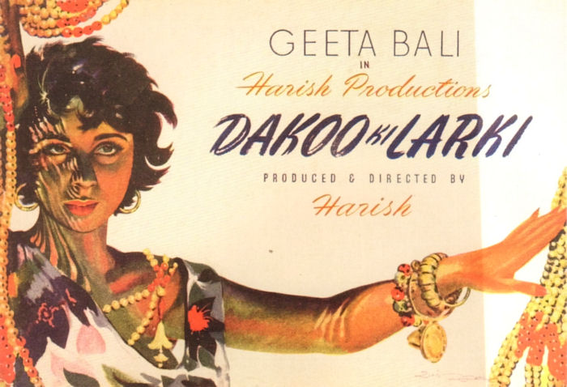

Bollywood History
Timeline
1931
Alam Ara, the first Indian film with sound, was released.
1949
Bollywood began to experiment with making horror film. Mahal starring Madhubala is renowned as the first Indian horror film production.
1950s
The migration of thousands of South Asians to Britain in the 1950s from the sub-continent and from East Africa in the 1970s led to the creation of specialist cinemas, showing Bollywood films.
History - Layout Shifter
The word Bollywood is (obviously) a play on Hollywood, with the B coming from Bombay (now known as Mumbai), the center of the film world. The word was coined in the 1970s by the writer of a magazine gossip column, though there is disagreement as to which journalist was the first to use it. However, Indian cinema dates all the way back to 1913 and the silent film Raja Harishchandra, the first-ever Indian feature film. Its producer, Dadasaheb Phalke, was Indian cinema’s first mogul, and he oversaw the production of twenty-three films between 1913-1918. Yet unlike Hollywood, initial growth in the industry was slow.